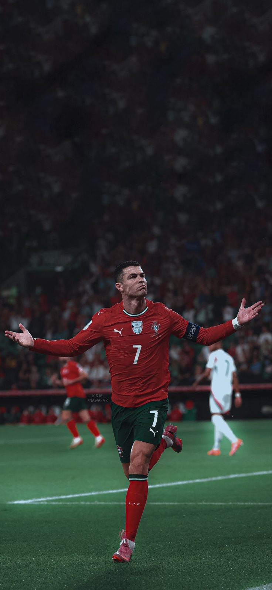
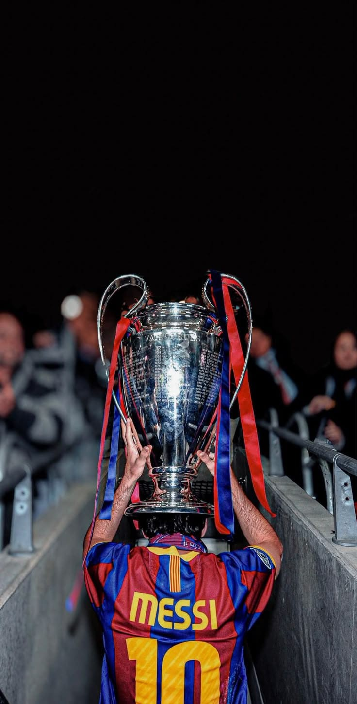
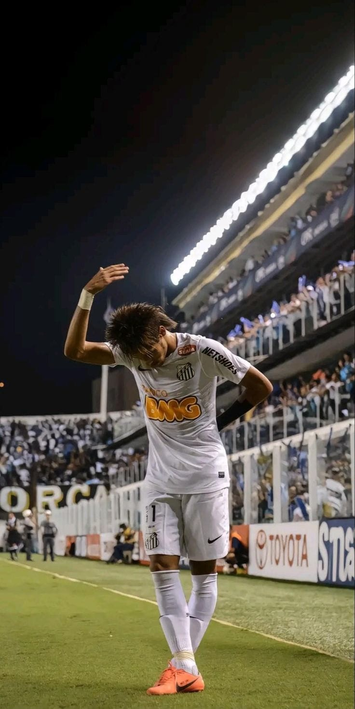
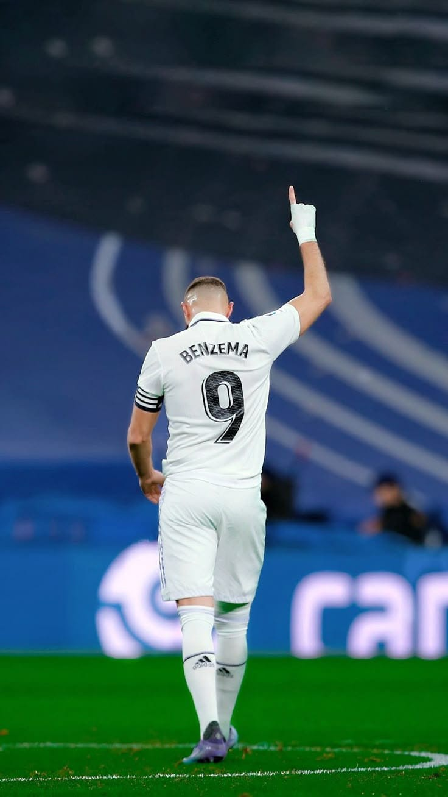
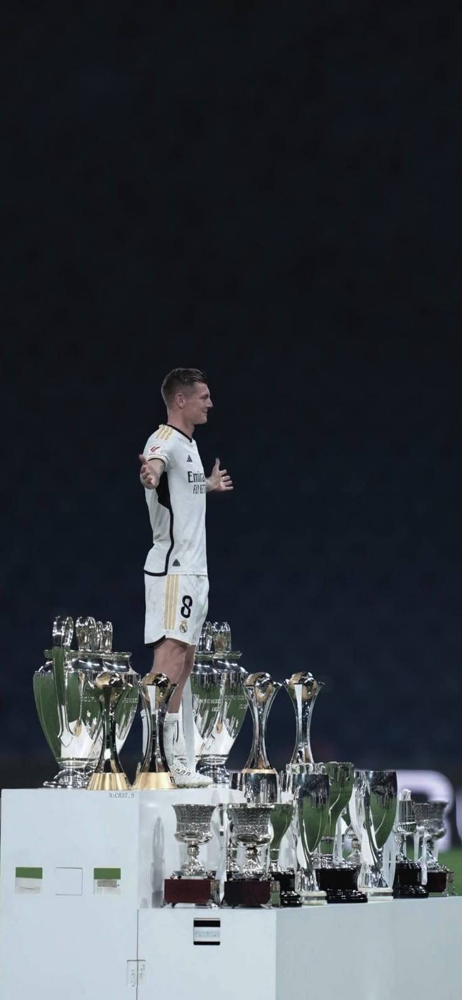
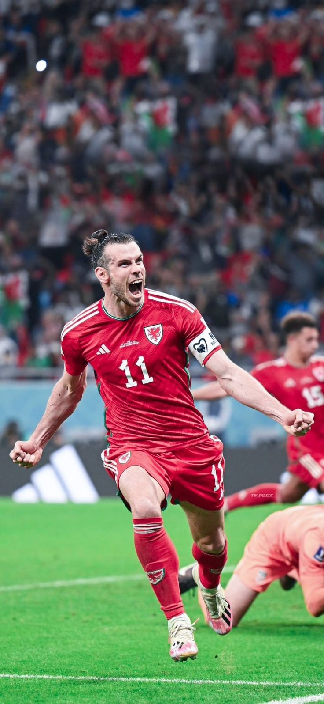
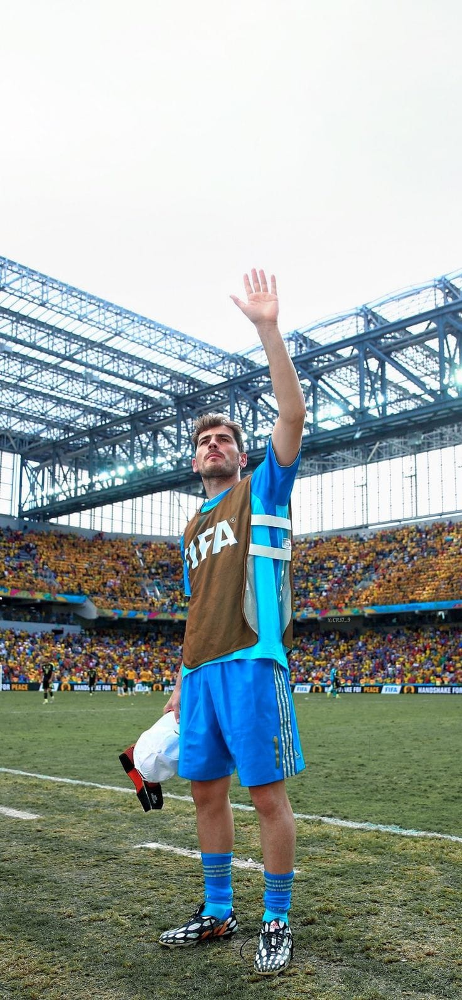
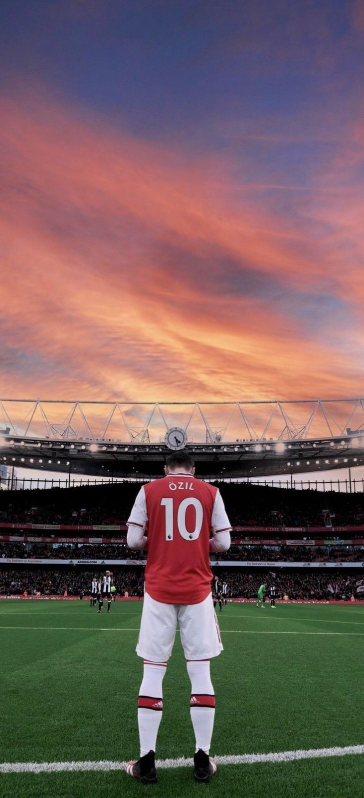

Cristiano Ronaldo CR7
Debut: 2002
Cedera: Minim — kondisi stabil. Kartu: Sedang akumulasi. Ronaldo dikenal karena daya ledak, penyelesaian akhir, dan ketajaman di area penalti.
Rekap karier & performa pemain sejak debut — ringkas, visual, dan mudah dibaca

Cedera: Minim — kondisi stabil. Kartu: Sedang akumulasi. Ronaldo dikenal karena daya ledak, penyelesaian akhir, dan ketajaman di area penalti.

Playmaker dan finisher; dribbling serta visi permainan yang membedakan Messi dari rekan sezamannya.

Skill individu tinggi, sering menjadi pembeda dalam momen 1v1. Perhatikan sejarah cedera saat menilai ketersediaan musim panjang.

Striker teknik yang mengandalkan hubungan antar pemain dan penyelesaian klinis di kotak penalti.

Gelandang dengan passing presisi, ideal sebagai pemutar bola. Dikenal dengan tendangan sudut yang akurat.

Kecepatan dan tendangan khas jarak jauh — karier dipengaruhi beberapa kali cedera hamstring.

Kiper legendaris dengan rekam jejak clean sheet tinggi. Kapten dan pemimpin tim yang karismatik.

Visioner, playmaker dengan assist terbanyak selama kariernya. Kunci dalam menciptakan peluang.

Gol total 890+. Klik untuk melihat riwayat musim dan detail cedera.

Playmaker klasik — ringkasan karier & statistik inti.

Catatan cedera perlu menjadi pertimbangan dalam evaluasi ketersediaan.

Striker komplet dengan kontribusi gol dan assist.

Gelandang dengan passing presisi, ideal sebagai pemutar bola.

Kecepatan dan tendangan khas — karier dipengaruhi cedera.

Kiper legendaris dengan rekam jejak clean sheet tinggi.

Visioner, playmaker dengan assist banyak selama kariernya.
Awal pencatatan: Pada era awal sepak bola profesional, statistik yang dicatat terbatas pada gol dan hasil pertandingan. Klub dan media membuat catatan manual untuk menilai performa pemain.
Perkembangan modern: Seiring digitalisasi pada 1990-an dan 2000-an, metrik lanjutan seperti assist, clean sheet, passing accuracy, expected goals (xG), dribble success, dan data tracking (kecepatan, jarak lari) menjadi umum. Perusahaan pengumpul data dan sensor in-stadium memungkinkan analisis yang sangat detail.
Manfaat: Statistik membantu scouting, analisis taktik, manajemen beban latihan, dan keputusan transfer. Namun, data harus selalu dikombinasikan dengan observasi manusia untuk konteks taktis dan kondisi fisik pemain.